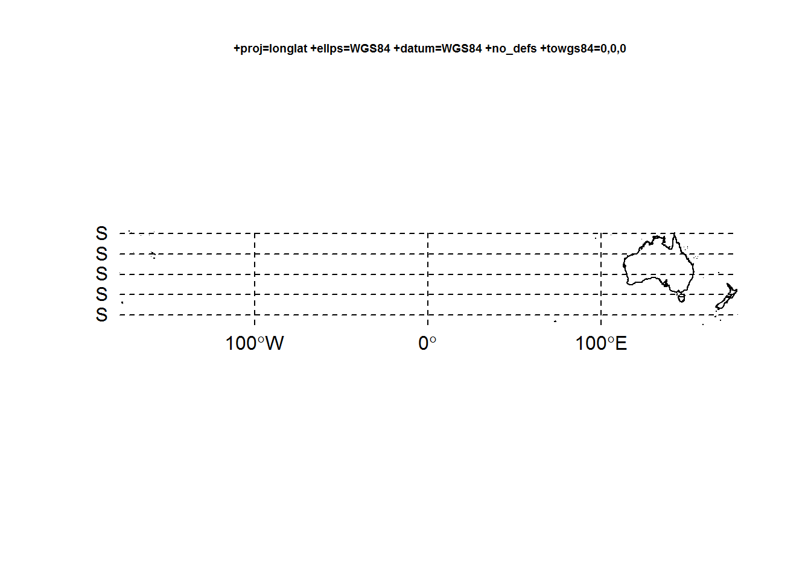
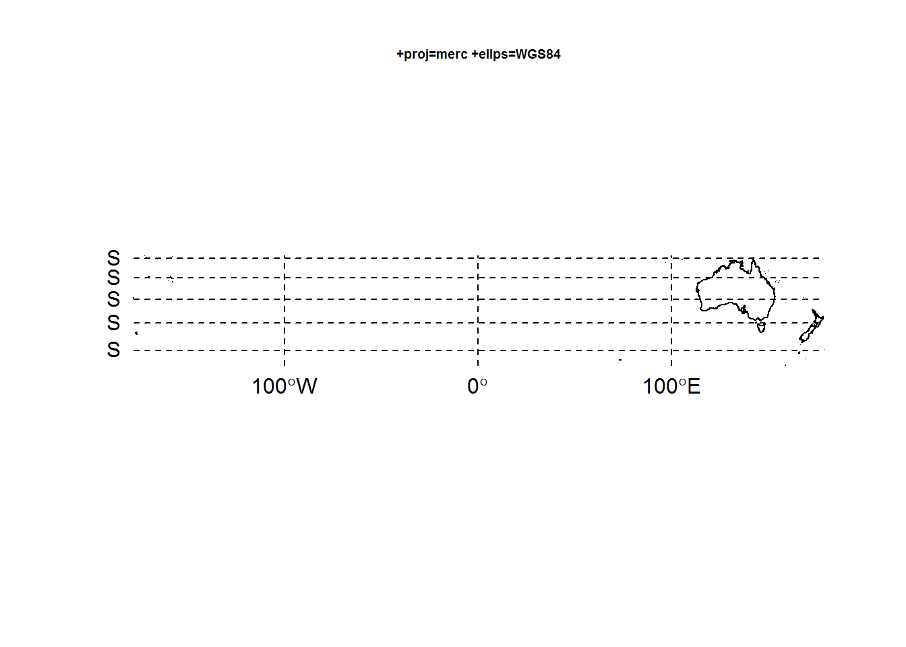
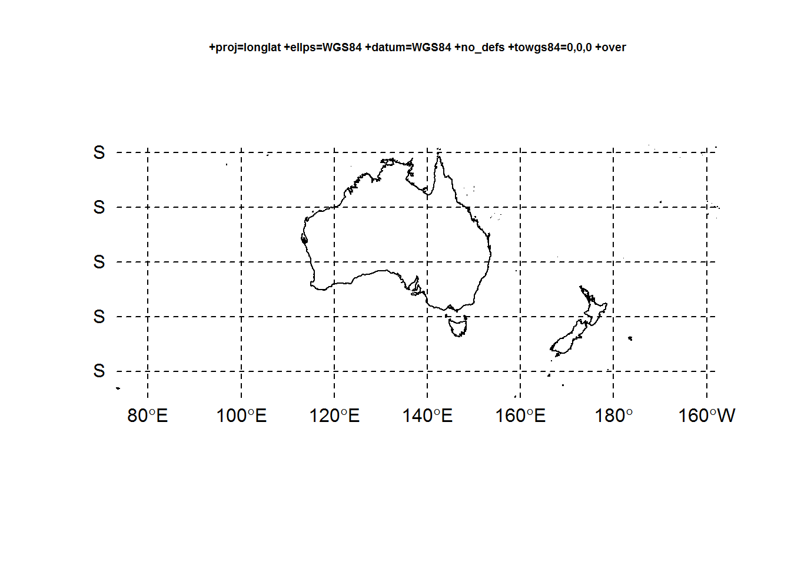
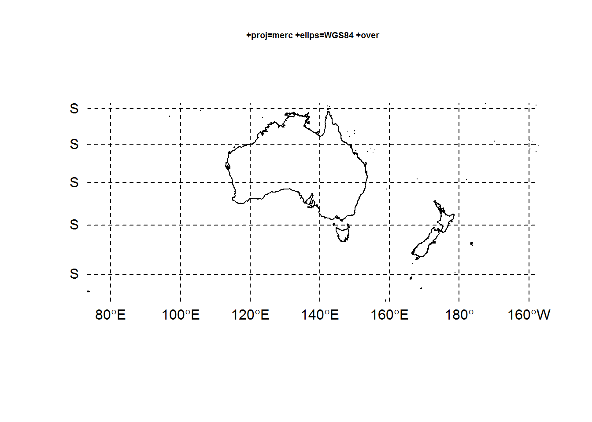
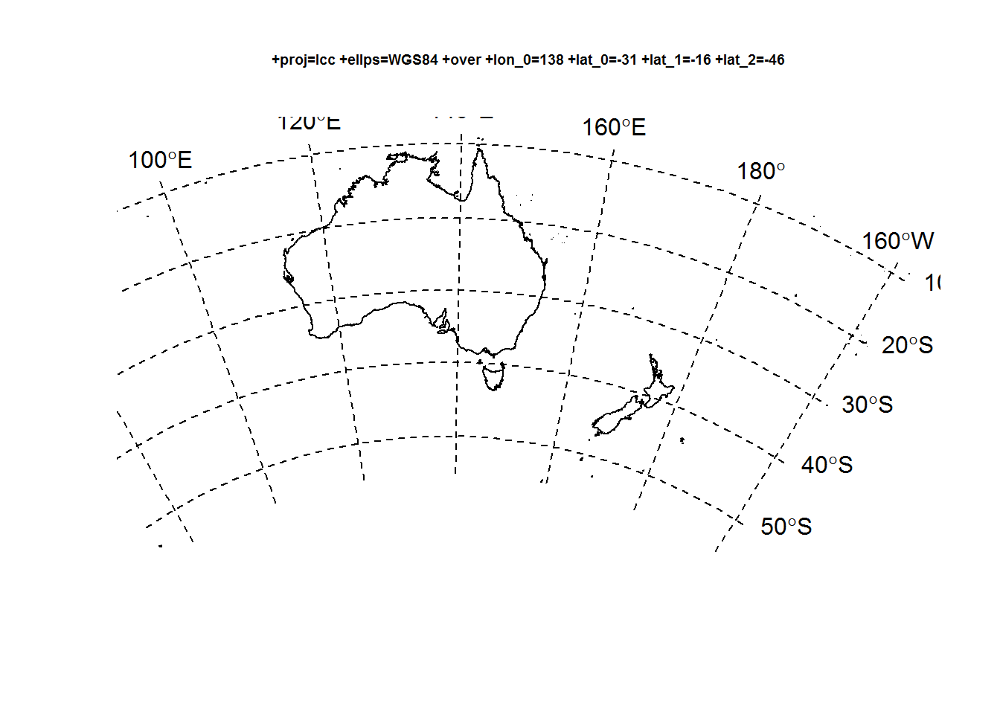
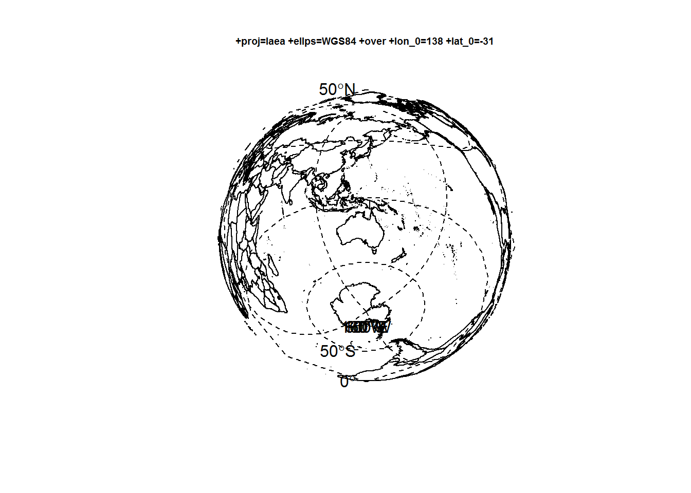

This is a raw map of Australia and New Zealand from a the R map package ‘rworldxtra’, using the default ‘Spatial’ plotting tools from ‘sp’.
library(rworldxtra)
data(countriesHigh)
library(rgdal)
dat <- subset(countriesHigh, SOVEREIGNT %in% c("Australia", "New Zealand"))
cm <- 0.6
plot(dat, main = proj4string(dat), cex.main = cm)
llgridlines(dat)
Now the same map but use the default Mercator projection.
merc0 <- "+proj=merc +ellps=WGS84"
x <- spTransform(dat, merc0)
plot(x, main = merc0, cex.main = cm)
llgridlines(x)
One problem is that there are pieces of New Zealand across the dateline, so let’s decompose and rejig with ‘spbabel’.
library(spbabel)
library(dplyr)
dat1 <- dat
sptable(dat1) <- sptable(dat1) %>% mutate(x_ = ifelse(x_ < 0, x_ + 360, x_))
suppressWarnings(proj4string(dat1) <- "+proj=longlat +ellps=WGS84 +datum=WGS84 +no_defs +towgs84=0,0,0 +over")Now compare.
plot(dat1, main = proj4string(dat1), cex.main = cm)
llgridlines(dat1)
merc0 <- "+proj=merc +ellps=WGS84 +over"
x <- spTransform(dat1, merc0)
plot(x, main = merc0, cex.main = cm)
llgridlines(x)
What about a more appropriate projection?
library(raster)
xcen <- function(x) as.integer(round(sum(c(xmin(x), xmax(x)))/2, digits = 1))
ycen <- function(x) as.integer(round(sum(c(ymin(x), ymax(x)))/2, digits = 1))
ll0 <- sprintf("+proj=lcc +ellps=WGS84 +over +lon_0=%i +lat_0=%i +lat_1=%i +lat_2=%i",
xcen(dat1), ycen(dat1), ycen(dat1) + 15, ycen(dat1) - 15)
a <- spTransform(dat1, ll0)
plot(a, main = ll0, cex.main = cm)
llgridlines(a, side = "EN")
laea0 <- sprintf("+proj=laea +ellps=WGS84 +over +lon_0=%i +lat_0=%i",
xcen(dat1), ycen(dat1))
b <- spTransform(countriesHigh, laea0)
plot(b, main = laea0, cex.main = cm)
llgridlines(b)